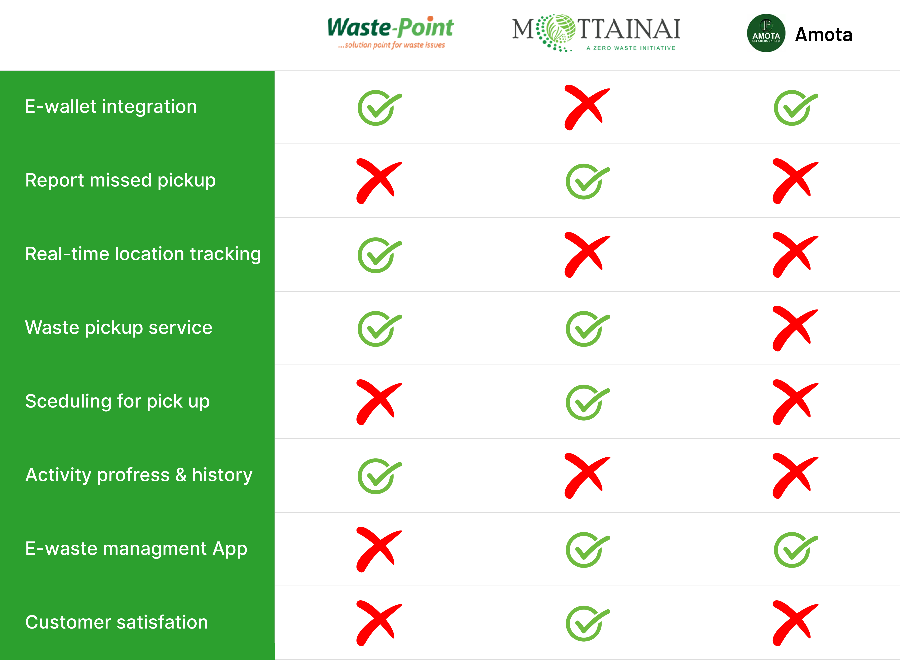
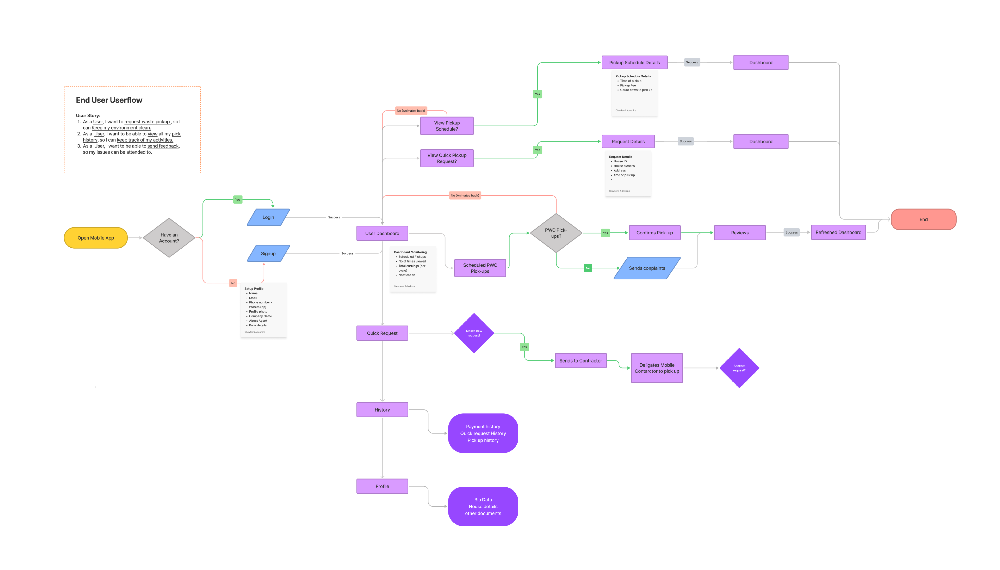

E-waste is the leading provider of comprehensive waste, and environmental management and environmental, offering services such as garbage collection and disposal, recycling and dumpster rental.

Research, wireframes, prototypes, UI Design, User flows, UI/UX Designer
Andriod & iOS
3rd April, 2022 to 21st April, 2022
Waste management
Project Overview
E-waste is a concept waste managment product that makes it possible for users and waste carriers to connect in order to streamline the waste collection process in the local government areas. Moreover, this app provides other sets of functionalities which helps users to overome challeges related to daily waste disposal.
My role is to design a usable product for users to effectively manage their waste disposals.
I conducted user interviews, user research survey, information architecture, and digital wireframes, low and high fedelity protoytying, conducting usability studies, iterating on designs, defining UX metrices, and defining busniess KPI.

Figma

Google Forms

Figjam

UXtweak
Validation
Oyo state is one of the main commercial state along with a fast growing population in Nigeria. The city produces an enormous amount of trash and people aren’t conscious about how approximately it has invaded natural environment.
Thus, government councils within cities are incompetent to manage the waste that are bieng collect. Mainly, this happens due to majority of suburbs within Oyo state doesn’t have a proper waste managment system. Also, it takes a massive effort to stabillize the city hygine level aswell as councils are unaware about dumping areas and resident’ requirements..
INITIATE
Reduce the hassle which residents face with waste disposal and waste managment collection service.
Reduce the hassle which residents face with waste disposal and waste managment collection service.
Reduce the hassle which residents face with waste disposal and waste managment collection service.
Empathize
Conducted mainly with the locally developed applications and several other applications that are being used in other parts of the world. Based on the findings, listed down features, functionalities and weaknessess of each application. Weaknessess are mainly identified by using the application and reviews posted in the mobile app stores.
Project Vision / Goal Statement
I learned alot about problems during thr research and found that users have similar behavoius and pain poinsts. Organizing everything helped me narrow it down to some points, from which I creaete a list of features that can help users.

87.5%
Participants prefer using dumping your wastes in waste banks to doorstep waste collection.

62.5%
Participants would like to know where their waste ends.

100%
Participants haven’t heard of any waste managment platform.
87.5%
Participants segregate their waste separately based on degradable property.
30%
Participants dispose their house waste weekly, while 25% dispose waste monthly.
100%
Participants would love to use a service that collects their household waste at doorstep.
A visualzation to articulate what a resident is as a whole and is not
Creating personas helps to understand who is a product’s users, what their goals and frustrations, and for what purpose they will use the product. The result should be believable people with their own experince and values.
I created the personas based on the outcomes of the user research. It typically helps me to create something user-centric.
Discover
After conducting surveys, compling user personas, defining target users, analyzing the responses, I developed insights that help me determine what features should be in a mobile, web app.
From the survey 100% of perticipants want an online payment feature to help access waste pickup services easily without the use of cash.
People need an app that they can easily use to track the waste picker’s real-time distance to where they are and also to track how their waste is been dispose.
People need an app that can immediately provide them with online app that provide them with easy waste collection services..
People need an app that can provide them easy access to schduling their waste or a quick waste pickup services without having to dispose them manually or disposing them at a wrong waste depot.
People need an app that can help them locate waste bins around them that are available for waste collection.
People need to be able to report if their waste have been missed so it can be resolved to prevent illegal disposal of wste.
100% of the participant are willing to report illegal disposal of waste, this is to help control illegal disposal of wastes.
After collecting all the data and information from users through research and extracting esstial information, I can draw this user flow diagram after sevel iterations that show the entire path that the user takes when using the product. Finnally, I create the most convinect navigation structure.
Lo-fi Wireframe
By creating user flow, it helps us deliver a great product experince. We made tens of wireframes to lay out layout content and functionality on a page which takes into account user needs and user journeys.
Easy navigation was a key user need to address in the designs in addition to equipping the app to work with assistive technologies.
Easy navigation was a key user need to address in the designs in addition to equipping the app to work with assistive technologies.
Final Design
By creating user flow, it helps us deliver a great product experince. We made tens of wireframes to lay out layout content and functionality on a page which takes into account user needs and user journeys.
Test Phase
I conducted two rounds of usability studies. Findings from the first study helped guide the designs from wireframes to mockups. The second study used a high-fidelity prototype and revealed what aspects of the mockups needed refining.
The navigation to location waste banks are not clear.
Participants were frustrated by the information on the i-report page.
The genearal flow is simple and clean.
Design Iteration
The suggestions from the usability testing were considered and the following changes were made.
Early designs didn’t make provision for easy navigation to the locate waste bank feature which users found to be frustrating, so I added the waste bank icon at home page top right for easy identification..
The initial usability study revealed frustration with the locating the avalability of waste banks and their specific location, since it’s a significant feature from the user research I refactored the screen to highlight the waste banks and added two icons to denot the availability of the waste bank and when a user clicks it shows the address of the waste bank.
Final Design
By creating user flow, it helps us deliver a great product experince. We made tens of wireframes to lay out layout content and functionality on a page which takes into account user needs and user journeys..
Visual style is an essential part of a project as it helps create a standardized system of colors, fonts, buttons, text input, and many other components that will be combined and displayed on user screens.
Inter is one of the popular design fonts for creating mobile applications, it’s a sans-serif typeface which is readability friendly and brings harmony to the design and makes it easy to understand.
Ab Bb Cc Dd Ff Gg Hh Ii is one fo the popular design tools for creating geometric sans sefir mobile apps, The precise goemetric design of it’s symbolsof it’s makes it suitable for both headings and body copy.er.
Ab Bb Cc Dd Ff Gg Hh Ii is one fo the popular design tools for creating geometric sans sefir mobile apps, The precise goemetric design of it’s symbolsof it’s makes it suitable for both headings and body copy.er.
Ab Bb Cc Dd Ff Gg Hh Ii is one fo the popular design tools for creating geometric sans sefir mobile apps, The precise goemetric design of it’s symbolsof it’s makes it suitable for both headings and body copy.er.
For many people, the color green has strong associations with nature and brings to mind lush grass, trees, and forests. Green is often described as a refreshing and tranquil color. So for the app I choose green as the primary color, and light gray as secondary colors for making some accents and used black and gray for the text color. Multiple colors helped to create a visual hierachy of information.

I made use of Iconsax, they provide a large range of illustrative icon that are explanatory which make them suitable to represent complex areas in design or words.


A11y Guidlines
By creating user flow, it helps us deliver a great product experince. We made tens of wireframes to lay out layout content and functionality on a page which takes into account user needs and user journeys.
Scheduling Bills
Used icons to help make navigation easier.
Iconography
Used icons to help make navigation easier.
Complex Navigation
Used detailed imagery for each utility bill service to help all users better understand the designs.
Test Phase
After the implementing feedback from the usability test, the project assessts where handled over to the devloper to concernce the development of the application, and after the development. The project was launched. Also, to effectively manage the product, I proposed some UX metrices and Business KPIs to track to help understand users activities on the mobile application and how it affects the business.
UX metrices
After the implementing feedback from the usability test, the project assessts where handled over to the devloper to concernce the development of the application, and after the development.
🎯 Daily active users (DAU)
🎯 Net promter score (NPS)
🎯 Unique Users (UU)